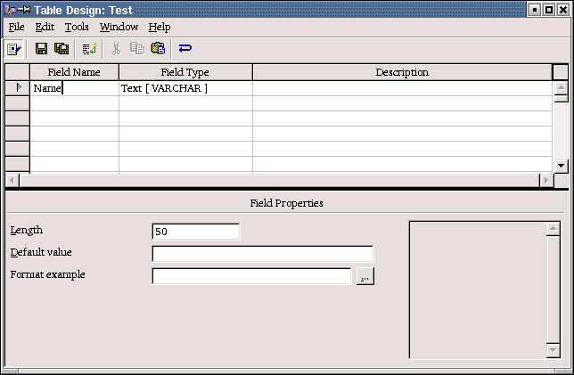
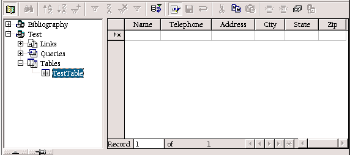

How to Create a Data Source from Scratch
provided by
the OpenOffice.org Documentation Project
Table of Contents
- Create the Data Source
- Adding Tables to a Data Source
- Editing Tables in a Data Source
- What do I do now?
Create the Data Source
These steps will run you through setting up a Data Source in the OpenOffice.org system. A dBase type database will be created for cross platform consistancy.
- Select the Tools-Data Source menu.
- Click New Data Source.
- Enter a name for your Data Source. NOTE: I am going to use TEST as the Data Source name.
- Press Tab.
- Select dBase as the Data Source. NOTE: We are using dBase, because it allows full control over the database on a local system.
- Press Tab.
- Enter a directory for the program to store the data files in. Be sure to enter a directory that DOES NOT exist. The program will automatically create it for you.
- Click Apply.
Adding Tables in a Data Source
In this section, we will go over how to Add tables in a Data Source. This section assumes that your Data Source allows full access to the database. Currently, dBase or Spreadsheet are the only types that allow this type of access to files on your computer. JDBC and ODBC can be used if you already have a Database System setup like MySQL, SQL Server, or ORACLE.
- Click on the Tables tab.
- Click on the New Table icon.
- The Table Design screen will show
 - Enter Name.
- Press Tab 3 times.
- Enter Telephone.
- Press Tab 3 times.
- Enter Address.
- Press Tab 3 times.
- Enter City.
- Press Tab 3 times.
- Enter State.
- Press Tab 3 times.
- Enter Zip.
- Click on File.
- Click on Save.
- Select a Name for your table. NOTE: For this How To, we will use TestTable.
- Close the Table Design screen.
- Close the Data Source window.
Edit data in a Data Source
This section demonstrates how OpenOffice.org can be used to enter, edit, and remove values in a Data Source.
- Adding Records
- Press F4.
- The Data Explorer window appears.
 - Click on the Test Data Source.
- Click on Tables.
- Click on TestTable
- If no records exist in the table, anything you type will automatically start a new record. Otherwise, click the New Record button
 .
. - Enter the following information pressing tab between fields:
John Doe 999-999-9999 1234 Anywhere This Town This State 12345 Jane Doe 122-122-1222 5431 Here Street This Town This State 12345
- Editing Records
- Click in John Doe's Telephone field.
- Enter 888-888-8888
- Press the Down Arrow. NOTE: Moving to a new record saves your changes.
- Deleting Records
- Click on the Row Selector in front of Jane Doe. Either or will select the record.
- Right click.
- Select Delete Rows.
What to do now?
Now that you have seen some of the things that OpenOffice.org can do with Databases, I would suggest the following:
- Play around with the different column types when adding tables.
- Look into creating SQL statements when in the Data Source screen.
NOTE: You will not hurt anything by playing around with the database that was created in this How To.
Intgr by : Gianluca Turconi
Last modified : March 2, 2002
Contacts : OpenOffice.org Documentation Project http://documentation.openoffice.org/index.html